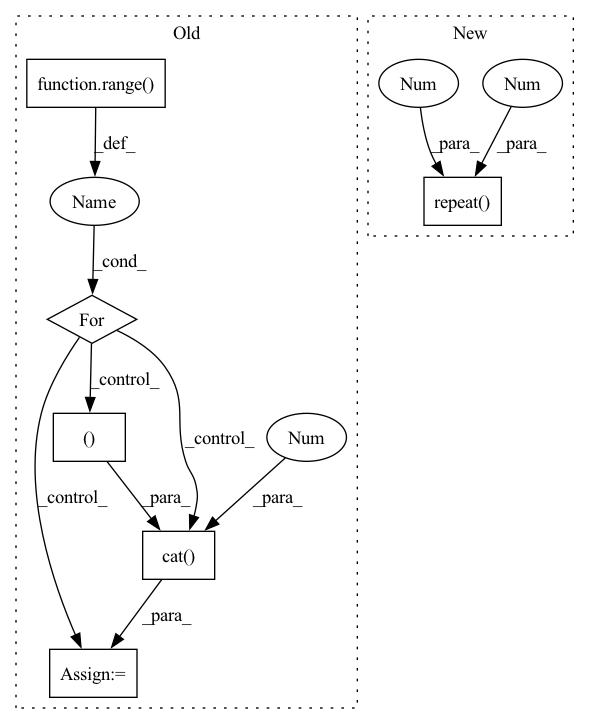

Pattern ID :7727

Before Change
score = F.log_softmax(y, dim=2) // calculate loss by NLLoss
// 因为是补齐了的，所以需要找到真正的 score
loc_len = batch.get_origin_len("current_loc")
for i in range(score.shape[0]):
if i == 0:
true_scores = score[i][loc_len[i] - 1].reshape(1, -1)
else:
true_scores = torch.cat(
(true_scores, score[i][loc_len[i] - 1].reshape(1, -1)), 0)
return true_scores
def predict(self, batch):
return self.forward(batch)
After Change
origin_len = batch.get_origin_len("current_loc")
final_out_index = torch.tensor(origin_len) - 1
final_out_index = final_out_index.reshape(final_out_index.shape[0], 1, -1)
final_out_index = final_out_index.repeat(1, 1, self.hidden_size).to(self.device)
out = torch.gather(out, 1, final_out_index).squeeze(1) // batch_size * hidden_size
out = F.selu(out)
out = self.dropout(out)
In pattern: SUPERPATTERN
Frequency: 3
Non-data size: 6
Instances
Fragment ID: 25622384
Project Name: libcity/bigscity-libcity
Commit Name: ec61c9cd984d1c86ee715380ed3b65b4222c8d1f
Time: 2021-05-06
Author: 33283819+WenMellors@users.noreply.github.com
File Name: trafficdl/model/trajectory_loc_prediction/RNN.py
M Class Name: RNN
N Class Name: RNN
M Method Name: forward(2)
N Method Name: forward(2)
M Parent Class: AbstractModel
N Parent Class: AbstractModel
M File Name: trafficdl/model/trajectory_loc_prediction/RNN.py
N File Name: trafficdl/model/trajectory_loc_prediction/RNN.py
M Start Line: 87
M End Line: 97
N Start Line: 84
N End Line: 94
'>
Before Change
y = self.fc_final(out) // batch_size * state_len * loc_size
score = F.log_softmax(y, dim=2)
// 因为是补齐了的，所以需要找到真正的 score
for i in range(score.shape[0]):
if i == 0:
true_scores = score[i][loc_len[i] - 1].reshape(1, -1)
else:
true_scores = torch.cat(
(true_scores, score[i][loc_len[i] - 1].reshape(1, -1)), 0)
return true_scores
def predict(self, batch):
return self.forward(batch)
After Change
origin_len = batch.get_origin_len("current_loc")
final_out_index = torch.tensor(origin_len) - 1
final_out_index = final_out_index.reshape(final_out_index.shape[0], 1, -1)
final_out_index = final_out_index.repeat(1, 1, 2*self.hidden_size).to(self.device)
out = torch.gather(out, 1, final_out_index).squeeze(1) // batch_size * (2*hidden_size)
out = self.dropout(out)
'>
Fragment ID: 25622382
Project Name: libcity/bigscity-libcity
Commit Name: ec61c9cd984d1c86ee715380ed3b65b4222c8d1f
Time: 2021-05-06
Author: 33283819+WenMellors@users.noreply.github.com
File Name: trafficdl/model/trajectory_loc_prediction/DeepMove.py
M Class Name: DeepMove
N Class Name: DeepMove
M Method Name: forward(2)
N Method Name: forward(2)
M Parent Class: AbstractModel
N Parent Class: AbstractModel
M File Name: trafficdl/model/trajectory_loc_prediction/DeepMove.py
N File Name: trafficdl/model/trajectory_loc_prediction/DeepMove.py
M Start Line: 122
M End Line: 175
N Start Line: 152
N End Line: 163
'>
Before Change
// print("size of encoder_states: ", encoder_states.size())
// print("size of encoder_outputs: ", encoder_outputs.size())
c1 = self.c
for i in range (source_length - 1):
c1 = torch.cat((c1, self.c), 1)
encoder_masks = torch.ne(attribute_idx, self.padding_token_idx)
decoder_outputs, decoder_states, _ = self.decoder(input_embeddings, (encoder_states.contiguous(), c1), encoder_outputs, encoder_masks)
// token_logits (Torch.Tensor): shape: [source_length, target_length, vocabulary_size].
After Change
target_text = target_idx[:, 1:]
input_embeddings = self.dropout(self.target_token_embedder(input_text))
c1 = self.c.repeat(1, source_length, 1)
encoder_masks = torch.ne(attribute_idx, self.padding_token_idx)
decoder_outputs, decoder_states, _ = \
self.decoder(input_embeddings, (encoder_states.contiguous(), c1), encoder_outputs, encoder_masks)
'>
Fragment ID: 25622383
Project Name: rucaibox/textbox
Commit Name: 3013589868f051165bf2f3667114e6664b84d392
Time: 2021-02-18
Author: 602525931@qq.com
File Name: textbox/model/Attribute/attr2seq.py
M Class Name: Attr2Seq
N Class Name: Attr2Seq
M Method Name: calculate_loss(3)
N Method Name: calculate_loss(3)
M Parent Class: AttributeGenerator
N Parent Class: AttributeGenerator
M File Name: textbox/model/Attribute/attr2seq.py
N File Name: textbox/model/Attribute/attr2seq.py
M Start Line: 225
M End Line: 251
N Start Line: 191
N End Line: 204